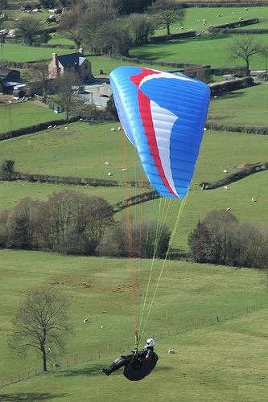

Build It Yourself
The democratization of technology isn't just about making things for less, to line the already full pockets of CEOs. The ubiquity of technology also allows hobbyists and students to build more for less. Nowhere is this truer than for aerodynamic gadgets such as cars, planes and even wind turbines!
Why not try building a wind turbine? Short on ideas? Try a Google search for 'build your own wind turbine' and you'll be inundated with ideas and designs for wind turbines. Blades cut from plastic pipe and a repurposed generator from Ebay are enough to get you started on a horizontal axis wind turbine generating environmentally friendly energy with zero greenhouse gas emissions. If you're feeling a little adventurous and don't have much wind around, why not consider building a vertical axis wind turbine, maybe a Savonius or a Darrieus, which can exploit the merest whiff of a breeze. These are things your neighbor will have a hard time topping by shopping at Home Depot.
 Solar Powered CarsCompeting in the 2005 North American Solar Challenge
Solar Powered CarsCompeting in the 2005 North American Solar Challenge
Maybe you prefer mobile projects such as cars? For students, there is Fomula SAE and its many derivatives, which require a student team to construct a racecar from scratch for each annual competition. For more environmentally sensitive students there is Formula Hybrid, which encourages recycling and repurposing of Formula SAE racecars to incorporate gasoline-hybrid drivetrains. Or consider building a car to maximize the number of miles per gallon of gasoline it consumes by entering the Shell Eco-marathon Americas. Still not green enough for you? Then consider solar powered racers. It seems that students have all the fun – maybe it comes with having time on their hands and no mortgage – but there are plenty of racing formulas for low budget racing, with scope to try out ideas. The Automotive X Prize offers a handsome reward for serious hobbyists to construct an environmentally friendly vehicle capable of over 100mpg. Radio controlled (RC) cars are a relatively inexpensive means to flex those "design and build" muscles without needing a racing garage to house the project – a box is usually good enough.
ParagliderLicense: CC BY 2.0, bladeflyer
Are cars a little too earthbound for you? What about flying machines? Starting small and simple with paper airplanes or kites leaves plenty of room for growth through RC gliders (sailplanes) planes and helicopters. Then if budget and nerve permit, there are always paragliders, microlights and gliders. Maybe retirement could be livened up with a powered airplane construction project. Aircraft still too slow? Right, rockets it is. Rockets are relatively simple – you'll need a rocket motor, a tube and stabilizing fins, available at virtually any hobby store.
No doubt eventually you'll want to design the ultimate widget either for construction in the real world or just for bragging rights in the virtual world. Then you'll need design and analysis software tools that don't require a second mortgage and are easy to use. Such tools fall within the realm of Computer-Aided Engineering (CAE). Our free Caedium unified simulation environment combined with our Professional add-on is aimed specifically at hobbyists and students in need of affordable, easy to use, aerodynamic simulation of streamlined shapes such as airplanes and racecars. Now this is democratization of technology in action; finally a chance for hobbyists and students to use simulation software previously only available to large corporations.
Feedback
Questions? Ideas? Problems?

Recent blog posts
- CFD Simulates Distant Past
- Background on the Caedium v6.0 Release
- Long-Necked Dinosaurs Succumb To CFD
- CFD Provides Insight Into Mystery Fossils
- Wind Turbine Design According to Insects
- Runners Discover Drafting
- Wind Tunnel and CFD Reveal Best Cycling Tuck
- Active Aerodynamics on the Lamborghini Huracán Performante
- Fluidic Logic
- Stonehenge Vortex Revealed as April Fools' Day Distortion Field
 Get our Blog feed
Get our Blog feed
Comments
Homebrew Wind Turbine
If you need some inspiration to get started on a homemade wind turbine, read about the construction of a 17' (5.18m) diameter horizontal-axis wind turbine. Even the generator stator and rotor were constructed from scratch – now that's hardcore DIY. According to the description the project took 3 weeks to complete (with help from friends) and the power output for a 10mph wind is about 400watts and for 16mph it's about 1.5KW.
Hugh Piggott
Hugh Piggott is a DIY wind-turbine construction guru and originator of the 'Axial Flux Plans'. At his website you'll find a treasure trove of information, tips and even seminars on the construction of wind turbines.